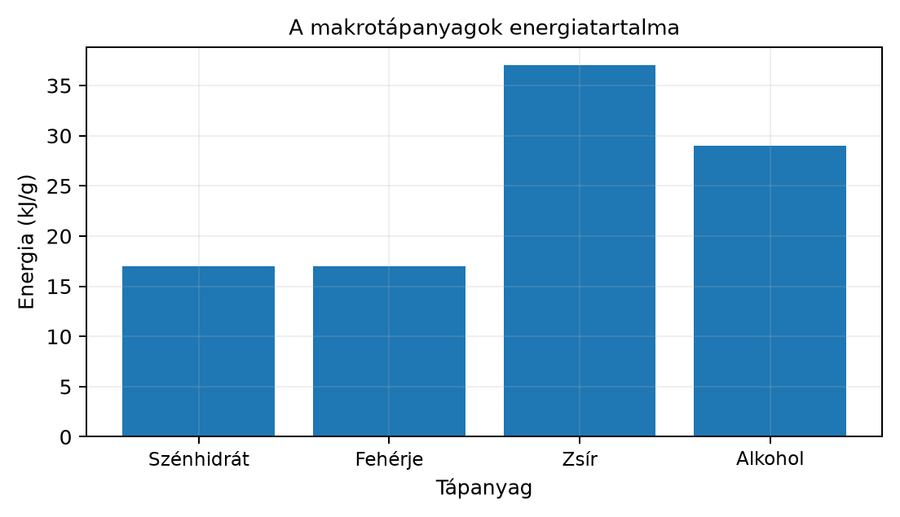
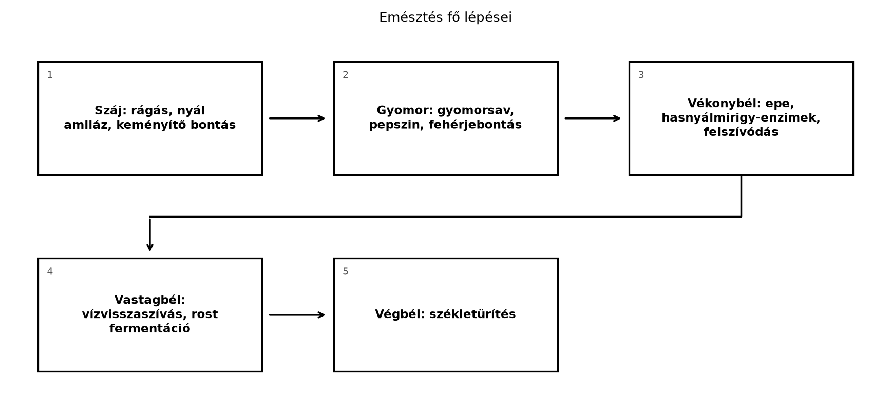

A cukrászüzemben naponta készülnek piskóták, krémek, csokoládébevonatok, fagylaltok és teasütemények. A vendég azonban nemcsak a szép formát és az ízt keresi: egyre gyakrabban kérdezi, mi van a termékben, mennyi cukrot, zsírt vagy allergén anyagot tartalmaz. A cukrásznak tudnia kell, hogy a felhasznált liszt, tojás, vaj, cukor és gyümölcs milyen tápanyagcsoportba tartozik, és hogyan alakul át a szervezetben. Ez a tudás segít a tápértékjelölés elkészítésénél, a diétás termékek fejlesztésénél, és megalapozza a későbbi energia- és tápanyagszámítást is. Ha értjük, miből van a nyersanyag, jobb döntést hozunk a receptúra módosításánál, például mikor érdemes teljes kiőrlésű lisztre cserélni, vagy mennyi zsiradék csökkenthető anélkül, hogy a krém szerkezete tönkremenne.
Képzelj el egy 100 g-os csokoládétortát. Ha szétválasztanánk az összetevőit, nagyjából vizet, fehérjét, zsírt, szénhidrátot és ásványi anyagokat találnánk benne. A vizes rész a krém és a tészta nedvességtartalma, a zsíros rész a vajból, tejszínből és csokoládéból, a fehérje a tojásból és a tejből, a szénhidrát a cukorból és a lisztkeményítőből származik. Ha ugyanezt a szeletet megesszük, az emésztőrendszer ezeket a nagy molekulákat kisebb részekre bontja, hogy a szervezet felszívhassa őket. Ez a fejezet erről a két oldalról szól: miből áll az ételünk, és mi történik vele az emésztés során.
Definíció. Az élelmiszer két fő részre osztható: vízre és szárazanyagra. A szárazanyag tartalmazza a víz kivételével minden komponenst: fehérjéket, zsírokat, szénhidrátokat, vitaminokat, ásványi anyagokat, valamint a járulékos és ballasztanyagokat.
A cukrászati nyersanyagok víztartalma igen eltérő. A friss gyümölcsök 80–90% vizet tartalmaznak, a tojásfehérje körülbelül 88%-ot, míg a vaj csak mintegy 16%-ot, a cukor gyakorlatilag 0%-ot (szárazanyag). A víz a cukrásztechnológiában oldószer, hőátadó közeg, és részt vesz a tészta állagának kialakításában.
Az élelmiszerek táplálkozási szempontból három nagy csoportra oszthatók:
Az alábbi táblázat összefoglalja a fő tápanyagcsoportokat, energiatartalmukat és cukrászati forrásaikat.
| Tápanyagcsoport | Fő feladat | Energiatartalom (kJ/g) | Cukrászati források | Megjegyzés |
|---|---|---|---|---|
| Szénhidrát | energia, íz, állag | 17 | cukor, liszt, keményítő, gyümölcs | a tápértékjelölésben a rost külön szerepel, nem a szénhidrát része |
| Fehérje | felépítés, enzimek, szerkezet | 17 | tojás, tej, liszt, olajos magvak | a glutén a liszt fehérjéje |
| Zsír | energia, aroma, krémesség | 37 | vaj, tejszín, csokoládé, olajos magvak | telített és telítetlen zsírsavak elegye |
| Alkohol | energia, aroma | 29 | rum, likőr, párlat | élettani hatásai miatt korlátozott |
| Élelmi rost | bélműködés, telítettségérzet | 8 | teljes kiőrlésű liszt, gyümölcs, olajos magvak | külön energiaátváltási tényező (ellenőrizendő: 1169/2011/EU XIV. melléklet) |
| Poliolok (cukoralkoholok) | édesítőszer | 10 (eritrit: 0) | xilit, maltit, szorbit, eritrit | jelölésben külön tényezővel (ellenőrizendő: 1169/2011/EU XIV. melléklet) |
| Szerves savak | íz, savasság | 13 | citromsav, almasav | külön tényezővel (ellenőrizendő: 1169/2011/EU XIV. melléklet) |
Az energiaértékeket az úgynevezett Atwater-féle átlagos együtthatókkal becsüljük. Az itt használt értékek megegyeznek az 1169/2011/EU rendelet energia-átváltási tényezőivel, de az élelmiszer-jelölésnél mindig a hatályos táblázatot kell használni (ellenőrizendő: XIV. melléklet).
Definíció. A szénhidrátok szénből, hidrogénből és oxigénből felépülő szerves vegyületek. Táplálkozási szempontból három alcsoportra osztjuk őket: egyszerű cukrok, keményítő és élelmi rost.
Egyszerű cukrok. Ide tartoznak a monoszacharidok (glükóz, fruktóz) és a diszacharidok (szacharóz, azaz a répacukor, laktóz, maltóz). A cukrászatban leggyakrabban a répacukorral dolgozunk. A glükózszirup és az invertcukor szintén fontos összetevők, mert befolyásolják a kristályosodást, a fagyáspontot és az édességérzetet. Az egyszerű cukrok gyorsan felszívódnak, ezért gyors energiaforrást jelentenek, de hirtelen megemelik a vércukorszintet.
Keményítő. A keményítő növényi raktározott szénhidrát, amely sok glükózegységből áll. A lisztben, a burgonyakeményítőben és a kukoricakeményítőben található. A sütés során a keményítő csirízesedik: a hő és a víz hatására a szemcsék megduzzadnak, és a tészta szerkezete kialakul. A szervezetben a keményítő fokozatosan bomlik glükózzá, ezért lassabb, tartósabb energiaforrás.
Élelmi rost. A rostok növényi sejtfal-alkotók (cellulóz, pektin, hemicellulóz), amelyeket a vékonybél enzimei nem tudnak lebontani. A vastagbélben részlegesen fermentálódnak. A rostok növelik a telítettségérzetet, lassítják a cukorfelszívódást és segítik a bélműködést. A cukrászati termékek általában kevés rostot tartalmaznak, ezért a teljes kiőrlésű liszt, a gyümölcsök és az olajos magvak hozzáadása kedvező.
Definíció. A fehérjék aminosavakból felépülő nagy molekulák, amelyek a szervezet építőkövei, enzimek, hormonok és immunanyagok alkotói. A fehérjék minőségét az aminosav-összetétel határozza meg.
A cukrászatban a legfontosabb fehérjeforrások:
A fehérjék emésztése a gyomorban kezdődik, ahol a gyomorsav és a pepszin a nagy fehérjemolekulákat kisebb peptidekre bontja.
Definíció. A zsírok glicerinből és zsírsavakból felépülő vegyületek, amelyek vízben nem oldódnak. Energiájuk koncentrált: 1 g zsír több mint kétszer annyi energiát ad, mint 1 g szénhidrát vagy fehérje.
A zsírsavakat telítettségük szerint csoportosítjuk:
A zsírok a cukrászatban ízhordozók, krémessé teszik a terméket, és részt vesznek az omlós tészták porhanyóssá tételében.
Definíció. A vitaminok kis mennyiségben szükséges szerves anyagok, amelyeket a szervezet többnyire nem tud előállítani. Két csoportjuk van: zsírban oldódó (A, D, E, K) és vízben oldódó (B-csoport, C).
A cukrászati nyersanyagok közül:
A vitaminok érzékenyek a hőre, fényre és oxigénre. A sütés és a főzés csökkenti a C-vitamin tartalmat, ezért a friss gyümölcsöket lehetőleg a folyamat végén adjuk a termékhez.
Definíció. Az ásványi anyagok szervetlen anyagok, amelyek közül a makroelemek (kalcium, kálium, nátrium, magnézium, foszfor) nagyobb, a nyomelemek (vas, cink, jód, réz) kisebb mennyiségben szükségesek. A cukrászatban a tejből származó kalcium, a gyümölcsökből származó kálium, a tojásból származó vas és cink érdemel említést.
Definíció. A járulékos anyagok közé tartoznak a színezőanyagok, aromák, szerves savak (citromsav, alma sav), valamint a növényi másodlagos anyagok (pl. kakaóban lévő polifenolok). Ezek befolyásolják az érzékszervi tulajdonságokat és antioxidáns hatásúak lehetnek.
Definíció. A ballasztanyagok olyan nem emészthető növényi alkotók, amelyek a bélműködést segítik. Ide tartoznak a rostok, pektinek, cellulóz. A cukrászati termékekben a rosttartalom növelhető teljes kiőrlésű liszt, gyümölcs, zabpehely, olajos magvak hozzáadásával.
A következő ábra a makrotápanyagok energiatartalmát mutatja. Az értékeket a későbbi energia-számításokhoz használjuk.

Az ábra leírása. Az oszlopdiagramon négy oszlop látható. A szénhidrát és a fehérje oszlopa egyaránt 17 kJ/g értékű, a zsír oszlopa kiugróan magas, 37 kJ/g, az alkoholé 29 kJ/g. Ez jól mutatja, miért növeli meg drasztikusan egy termék energiatartalmát a sok zsiradék vagy a hozzáadott alkohol.
Az emésztés során a nagy tápanyagmolekulák kisebb, felszívódó egységekre bomlanak.
Száj. A rágás mechanikusan aprítja az ételt. A nyál amiláz enzimje elkezdi a keményítő bontását kisebb cukoregységekre. A nyállal átitatott ételből lenyelhető falat alakul ki.
Gyomor. A gyomorsav elpusztítja a mikroorganizmusok egy részét, és aktiválja a pepszint, amely a fehérjéket bontja peptidekre. A zsírok itt csak kismértékben emészthetők.
Vékonybél. Itt történik a tápanyagok döntő felszívódása. Az epe emulgeálja (apró cseppekre oszlatja) a zsírokat, a hasnyálmirigy enzimei (amiláz, lipáz, tripszin) a keményítőt, zsírokat és fehérjéket tovább bontják. A vékonybél falának bélbolyhain keresztül a cukrok, aminosavak, zsírsavak, vitaminok és ásványi anyagok a vérbe vagy a nyirokrendszerbe jutnak.
Vastagbél. Itt a víz és egyes ásványi anyagok visszaszívódnak, a rostokat a bélbaktériumok részlegesen fermentálják. A maradék székletként távozik.
Az alábbi folyamatábra az emésztés fő állomásait és az ott történő lebontó folyamatokat szemlélteti.

Az ábra leírása. A folyamatábrán öt doboz követi egymást, nyilakkal. Az első a száj, ahol a keményítő bontása kezdődik, a második a gyomor, ahol a fehérjék emésztése indul, a harmadik a vékonybél, ahol a felszívódás döntő része zajlik, a negyedik a vastagbél a vízvisszaszívással, az ötödik a végbél. A lépések mutatják, hogy az egyes tápanyagcsoportok hol bomlanak le és hol szívódnak fel.
Példa. Egy 80 g-os csokoládészelet tápanyagtartalma: 30 g szénhidrát, 4 g fehérje, 15 g zsír, 2 g alkohol. Számítsuk ki az energiatartalmát kJ-ban és kcal-ban.
Adott: m_szénhidrát = 30 g, m_fehérje = 4 g, m_zsír
= 15 g, m_alkohol = 2 g.
Keresett: E (kJ).
Képlet:
Behelyettesítés:
.
Ellenőrzés: az egyes részek összege 510 + 68 = 578; 555
+ 58 = 613; 578 + 613 = 1191.
kcal-ban: 1 kcal ≈ 4,18 kJ, tehát
.
Gyakorlati kerekítés: 285 kcal, vagyis e szelet
energiasűrű, mert a zsír és a szénhidrát egyszerre magas. ∎
A hagyományos cukrászati termékek jellemzően magas szénhidrát- és zsírtartalmúak, közepes fehérjetartalmúak és alacsony rosttartalmúak. Ez azt jelenti, hogy energiasűrűségük nagy: kis mennyiségben is sok energiát adnak. Egy vajas krémes süteményben a zsiradék dominál, egy habcsókban szinte csak cukor és tojásfehérje van, a gyümölcsös piskóta pedig a szénhidrát mellett némi rostot és vitamint is hoz.
A tápanyagprofil ismerete segíti a receptúra-átszámítást, a diétás termék fejlesztését és a tápértékjelölés elkészítését. Például ha csökkentjük egy torta zsírtartalmát, a számításnál figyelembe kell venni, hogy a zsiradék csökkenésével az energiaérték csökken, de az állagromlás veszélye miatt gyakran módosítani kell a technológiát is (pl. zselésítővel vagy joghurttal pótolni a krémességet).
Továbbvitt eredmény. A tápanyagcsoportok (szénhidrát, fehérje, zsír, vitamin, ásványi anyag, rost) és energiatartalmuk közvetlenül szükséges az Energia- és tápanyagszükséglet, tápértékmegőrzés alfejezetben, ahol az energia- és tápértékszámítást részletezzük. Ugyanígy a nyersanyagismereti fejezetekben – A répacukor és a cukorfajták, A tej, a tejszín és a tejkészítmények, Gabonák és lisztek: liszttípusok, sikér és lisztvizsgálat, Állati eredetű zsiradékok: vaj, sertészsír, háj, Hazai és déli gyümölcsök, szárított gyümölcsök, Hús, baromfi, vad, hal és hidegvérűek – áttekintés a sós cukrászati termékekhez – mindig visszautalunk arra, hogy az adott nyersanyag milyen tápanyagcsoportba tartozik, és milyen technológiai szerepet tölt be.
Egy várandós vendég megkéri a cukrászt, hogy ajánljon alacsony cukortartalmú süteményt. A cukrász megnézi a receptúrát, és kiszámolja, hogy a kért gyümölcsös piskótában mennyi a hozzáadott cukor és a természetes gyümölcscukor. Mivel a tápértékjelölés szerint a szénhidráttartalmat kell feltüntetni, és azon belül a cukortartalmat, a cukrász a nyersanyag-összetételből kiindulva becslést készít. Ez a tudás lehetővé teszi, hogy ne csak tippeljen, hanem hitelesen tájékoztassa a vendéget, és az allergén vagy diétás igényeknek megfelelő terméket ajánljon. A tápanyagcsoportok ismerete nélkül ez nem megy.
1. feladat (A). Definiáld a következő fogalmakat egy-egy mondatban: víz, szárazanyag, élelmi rost, esszenciális aminosav, transz-zsírsav.
2. feladat (A). Sorold be a következő cukrászati nyersanyagokat a domináns makrotápanyagcsoportjukba: vaj, tojásfehérje, kristálycukor, búzaliszt, étcsokoládé, málna.
3. feladat (B). Egy 150 g-os krémes sütemény tápanyagtartalma: szénhidrát 45 g, fehérje 6 g, zsír 22 g. Számítsd ki az energiatartalmát kJ-ban és kcal-ban. Az alkohol 0 g.
4. feladat (B). Egy receptúra módosításakor a cukrász 100 g vaj (82% zsírtartalom) helyett 50 g vajat és 50 g almapürét használ egy muffinreceptben (az almapüré kb. 12% szénhidrátot és 0,2% zsírt tartalmaz; tanulási adat, ellenőrizendő: tápanyagtáblázat). Mennyivel változik a zsír- és szénhidráttartalom, ha az összes többi összetevőt változatlanul hagyjuk?
5. feladat (C). Vendégpanasz: egy „diétás” torta szeletenként kb. 320 kcal-t tartalmaz, holott a vendég 200 kcal alatti édességet keres. A jelenlegi receptúra szeletenként 20 g zsírt, 30 g szénhidrátot és 5 g fehérjét tartalmaz. Melyik makrotápanyagot érdemes elsősorban csökkenteni ahhoz, hogy az energia 200 kcal alá csökkenjen, és miért? Számold ki, mennyi zsírt kellene elhagyni szeletenként úgy, hogy a szénhidrát és a fehérje változatlan maradjon.
6. feladat (D). Válassz ki egy hagyományos magyar cukrászati terméket (pl. Dobos torta, Eszterházy torta, krémes), és készíts róla tápanyagprofil-táblázatot 100 g-ra vetítve. Határozd meg a domináns tápanyagcsoportokat, és írd le szövegesen, hogyan befolyásolja a termék energiatartalmát a tészta, a krém és a bevonat összetétele.
1. feladat (A).
- Víz: az élelmiszer nedvességtartalma, oldószer és hőátadó közeg.
- Szárazanyag: az élelmiszer víz nélküli része, benne a szerves és
szervetlen komponensek.
- Élelmi rost: növényi, nem emészthető szénhidrát, amely a bélműködést
segíti.
- Esszenciális aminosav: olyan aminosav, amelyet a szervezet nem tud
előállítani, ezért táplálékkal kell bevinni.
- Transz-zsírsav: ipari hidrogénezésből származó mesterséges telítetlen
zsírsav, korlátozott bevitellel.
2. feladat (A).
- Vaj: zsír
- Tojásfehérje: fehérje
- Kristálycukor: szénhidrát (egyszerű cukor)
- Búzaliszt: szénhidrát (keményítő) + fehérje (glutén) – dominánsan
szénhidrát
- Étcsokoládé: zsír (kakaóvaj) + szénhidrát (cukor) – dominánsan zsír,
de magas szénhidrát is
- Málna: szénhidrát (gyümölcscukor, rost) + vitaminok
3. feladat (B).
E = 45·17 + 6·17 + 22·37 = 765 + 102 + 814 = 1681 kJ.
kcal = 1681 / 4,18 ≈ 402 kcal.
Ellenőrzés: az összetevők össztömege 45+6+22 = 73 g, a maradék víz és
egyéb. Az energia reális egy krémes süteménynél.
4. feladat (B).
Eredetileg: 100 g vaj, zsírtartalom 82% → 82 g zsír, 0 g
szénhidrát.
Új: 50 g vaj → 41 g zsír; 50 g almapüré → 0,1 g zsír és 6 g szénhidrát;
összesen 41,1 g zsír, 6 g szénhidrát.
Változás: zsír 82 − 41,1 = 40,9 g-mal csökken, szénhidrát 6 g-mal
nő.
Az energiatartalom változása: 40,9 g zsír energiája 40,9·37 ≈ 1513 kJ
csökkenés, 6 g szénhidrát energiája 6·17 = 102 kJ növekedés, nettó 1513
− 102 ≈ 1411 kJ csökkenés.
5. feladat (C).
Jelenlegi energia: 20·37 + 30·17 + 5·17 = 740 + 510 + 85 = 1335 kJ ≈ 319
kcal.
A legnagyobb energiaforrás a zsír, mert grammonként 37 kJ-t ad, míg a
szénhidrát és fehérje csak 17 kJ/g-ot. Ha 200 kcal (836 kJ) alá akarjuk
csökkenteni, a zsírt kell jelentősen mérsékelni.
Cél: 200 kcal = 836 kJ. A szénhidrát és fehérje energiája: 30·17 + 5·17
= 510 + 85 = 595 kJ. A zsír maximális energiája: 836 − 595 = 241
kJ.
Ebből a zsír maximális mennyisége: 241 / 37 ≈ 6,5 g.
Tehát a jelenlegi 20 g zsírból el kell hagyni legalább 20 − 6,5 = 13,5 g
zsírt szeletenként.
Ez a gyakorlatban a krém vajtartalmának csökkentését vagy más,
alacsonyabb zsírtartalmú krém használatát jelenti.
6. feladat (D).
A feladat megoldása egy mintatáblázatot igényel, amely a választott
termék receptúráján alapul. Példaként a Dobos torta 100 g-jában a
becsült értékek (tanulási példa, ellenőrizendő receptúra alapján):
szénhidrát 55 g, fehérje 7 g, zsír 30 g, rost 1 g. Az energia = 55·17 +
7·17 + 30·37 = 935 + 119 + 1110 = 2164 kJ ≈ 518 kcal. A torta
energiasűrűségét a vajas krém és a cukros piskóta együttesen adja; a
bevonat karamellje szinte tiszta szénhidrát. A fehérje a tojásból, a
zsír a vajból származik. A rost minimális, mert fehér lisztet és cukrot
használunk.
Az élelmiszer vízből és szárazanyagból áll. A szárazanyagot makrotápanyagokra (szénhidrát, fehérje, zsír), mikrotápanyagokra (vitaminok, ásványi anyagok) és járulékos, valamint ballasztanyagokra osztjuk. A szénhidrátok közül a cukor gyors, a keményítő lassabb energiát ad, a rost pedig nem emészthető, de segíti a bélműködést. A fehérjék építőkövek, a liszt gluténje a tészta szerkezetét adja. A zsír a legnagyobb energiatartalmú makrotápanyag (37 kJ/g), szemben a szénhidrát és fehérje 17 kJ/g értékével. A zsírsavak telített, telítetlen és transz formában fordulnak elő; a transz-zsírsavakat korlátozni kell. Az emésztés során a szájban a keményítő, a gyomorban a fehérje, a vékonybélben a zsír és a többi tápanyag bomlik le és szívódik fel. A cukrászati termékek jellemzően magas szénhidrát- és zsírtartalmúak, ezért energiasűrűek. Ez a tudás alapozza meg az energia- és tápértékszámítást, valamint a későbbi nyersanyagismereti fejezeteket.